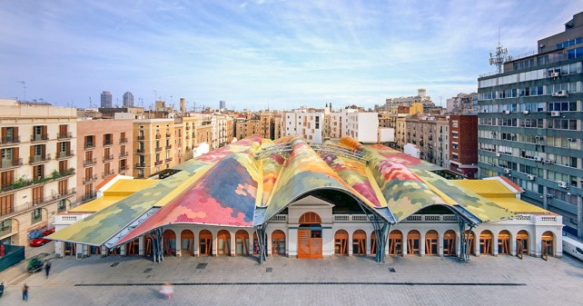
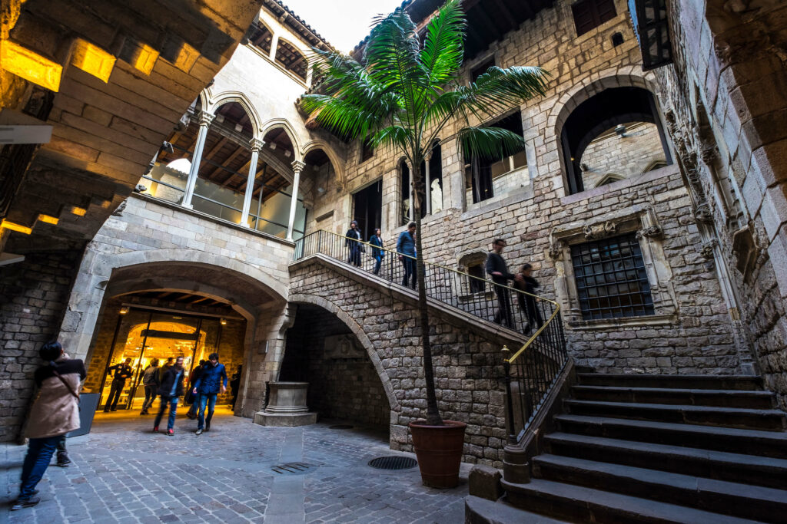
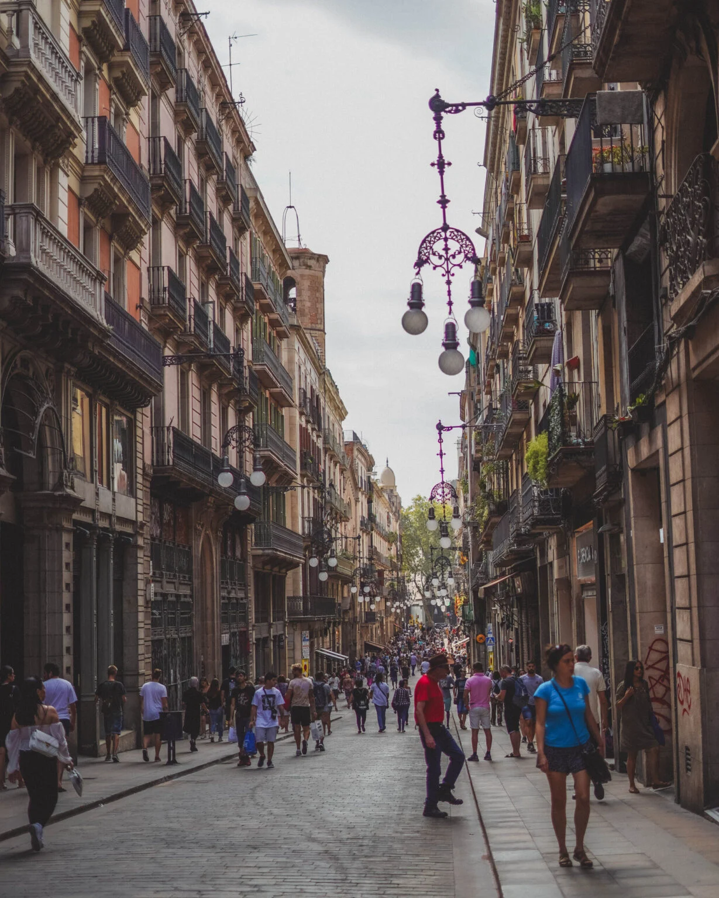

Gaudí, Picasso & Rooftops
The cathedral that defies physics, the market the locals actually use, the greatest Picasso collection in the world, and a rooftop dinner as the sun sets over Barcelona.

There is nothing else like it on earth. Gaudí began it in 1882 and died before it was a quarter finished — it reaches completion in 2026, his centenary year, which means you're visiting at a genuinely historic moment. The exterior is extraordinary, but the interior is the revelation: forest-like columns branch into the ceiling, and the stained glass on the east wall casts the entire nave in shifting colour as the morning progresses. Download the official Sagrada Família app and bring earphones — the audio guide is excellent and included in your ticket. Allow 1.5–2 hours. The 9am first slot is the quietest and most beautiful time of day.

Take the metro from Sagrada Família to El Born (about 15 minutes) and head straight to Santa Caterina — Barcelona's best market and the one locals actually use. The building is an architectural event: an undulating mosaic tile roof designed by Enric Miralles, a riot of colour visible from the street. Inside: fresh produce, jamón, local cheese, olives, and real neighbourhood life. Head to Bar Joan inside for traditional tapas at genuinely local prices — the perfect late morning snack before the Picasso Museum next door.

One of the great museums in Europe, and the setting makes it extraordinary: five connected medieval palaces in the heart of El Born, their 15th-century courtyards converted into gallery spaces. The collection focuses on Picasso's formative years in Barcelona — over 4,000 works tracing his development from teenage prodigy to revolutionary artist. The Las Meninas series, his 58-painting dialogue with Velázquez, is alone worth the visit. Allow 1.5 hours and book tickets in advance for July.

Step out of the Picasso Museum directly into one of the best-preserved medieval city centres in Europe, with Roman walls still visible built into the buildings. The goal here is not a checklist but an atmosphere — get pleasantly lost. Find Plaça Reial with its palm trees and wrought-iron lampposts designed by a young Gaudí. Walk Carrer del Bisbe. Find the Barcelona Cathedral. Stumble into hidden courtyards. Let the teens lead for a while — the quarter rewards wandering more than planning.
A flat, beautiful 2km boardwalk running from Port Olímpic to Barceloneta, lined with palm trees, beach bars, and public art — with the Mediterranean right beside you the entire way. This is a relaxed wind-down after a big culture day: stroll, breathe, feel the sea air. The beach is right there if anyone wants to kick off their shoes and paddle — no commitment needed, just the option. Allow about an hour at whatever pace feels right, then head back toward Eixample to freshen up for dinner.
Tonight's the special dinner. Sunset in Barcelona in July is at 9:15pm — you'll be seated and settled when the city turns gold. Three well-regarded options near your routing: La Pepita Rooftop in Gràcia (tapas and cocktails, relaxed, great for families), SKYBAR at Grand Hotel Central in El Born (rooftop terrace, spectacular city views, more casual), or Terraza del Hotel Ohla in the Gothic Quarter (elegant, excellent food, intimate). All three are bookable online — recommended for Sunday evening in July. Dinner at 8:30pm is perfectly Spanish.
Book in advance for Sunday evening · 8:30–9pm is normal dinner time in Barcelona · Sunset at 9:15pm — watch it from above the city